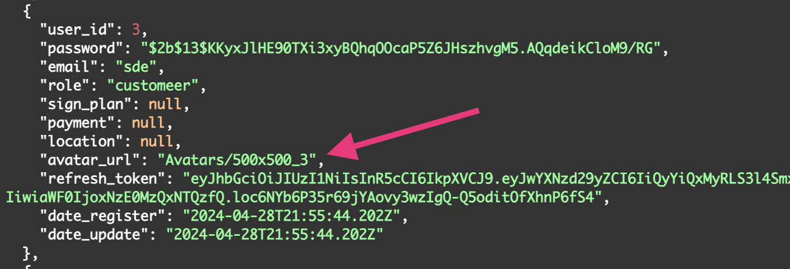
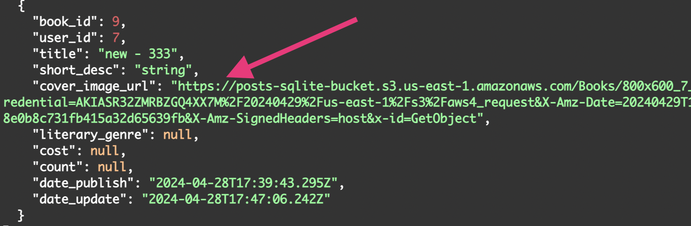

Інформація про ресурс
Перед вами тренувальний проект для безробітних людей, які хочуть здобути практичні навички.
Тут написано структуру, яку можна подати як стрічку з публікацій і їх перемішувати з книгами. Під публікаціями можна залишати коментарі. Книги мають вартість і кількість тому можуть продаватись. Заплановано три ролі користувачів: покупець - може робити публікації і коментарі; автор - може робити речі як покупець, але і публікувати книги на продаж; адмін - має трішки більше доступу до інформації. Також у користувача може бути застосована підписка на ресурс, тут же відмічається статус оплати.
Не написано, але могли би бути у реальному проекті:
-
Зворотній звʼязок з адміністором (підключення email)
-
Платіжний сервіс
-
Розділ даних і маршрути по оплатам за книги і підписки
-
Кабінет автора з його власною статистикою про продажі книг
-
Модерація контенту зі сторони адміна
-
Резервне копіювання бази і файлів
Кому це може бути цікаво?
-
дизайнерам
-
тестувальникам
-
фронтенд розробникам
-
мобільним розробникам
-
бекенд розробникам (node js)
Що я пропоную?
-
Ознайомитися з структурою АРІ. Тут можна зробити сайт або додаток будь-якої складності, імітувати процесси, які ви захочете. Вже відправна точка написана.
-
Подумати чи цікаво зробити свій практичний проект на базі цього АРІ.
-
Зробити власний проект самостійного або з колегою і показати іншим.
-
Розмістити свій проект в резюме або мій як місце здобуття практики.
А також:
-
завершені проекти я додам на інфо сторінку серверу.
-
додам у розділ "Хто з нами?" учасників з посиланням на профілі у LinkedIn
-
дизайн проекти зможуть втілити в життя фронтенд розробники. Обрати з варіантів дизайнів під цей АРІ.
-
живі (на хостингу) сайти зможуть тестувати всі бажаючі.
-
для бекенд розробника пропозиція скромна - лише написати оптимізацію існуючого коду або розробити нові фітчі. Потім зробимо merge.
-
буде добрим доповненням до вашого проекту супровідний текстовий документ з деталями, які ви закладали в логіку. Тоді спеціаліст, який працює на вашій базі буде мати краще уявлення що розробляти і тестувати.
Останнє і не менш важливе. В термінах роботи ви не обмежені, працюйте в своєму режимі коли вам зручно, ставте свої власні терміни щоб проект мав окреслені часові межі і не закинули після втрати мотивації. Хостинг АРІ і домен працює мінімум рік, а далі подумаємо.
Я організатор цієї двіжухи. Не маю ніякого комерційного зиску. Зробив АРІ бо вчив нові речі для себе, а результатом не шкода поділитися. Користуйтесь. Тегніть своїх знайомих, кому це може бути цікаво. Навчайтесь. Звʼязок через приватні повідомлення або в коментарях під публікацією.
Документація
перехід на Swagger сторінкуУ проекті підключена база даних SQLite, вона як файл знаходиться на сервері разом з кодом. До неї не підключено окремого UI, тому доступ до даних тільки через консоль або АРІ.
База має кілька таблиць посилання на схему

User
/api-v1/user/register
Створює новий профіль користувача при відправці форми з обовʼязковими полями:
{ "password": "string", "email": "string", "role": "string" }
Пароль кодується і зберігається в базі у закодованому вигляді (bcrypt).

Назад маршрут повертає весь обʼєкт користувача, включно з новим полем access_token - цей ключ потрібен в майбутньому при зверненні до захищених маршрутів АРІ. Цей токен має обмежений термін життя - 10 хвилин , а потім потрібно звернутись за оновленням токену.
/api-v1/user/token
Очікує refresh_token, який раніше був виданий користувачу при реєстрації чи вході. Перевіряє чи їснує такий токен взагалі і проходить розкодування. Потім формує новий access_token і повертає на сторону клієнта
{ "refresh_token": "string" }
/api-v1/user/login
Виконує автентифікацію користувача при отриманні обовʼязкових значень з форми
{ "password": "string", "email": "string" }
Перевіряє чи існує користувач з такою поштою в базі, якщо існує то перевіряє пароль. Назад маршрут повертає весь обʼєкт користувача, включно з новим полем access_token.
/api-v1/user/logout
Очікує refreshToken, який раніше був виданий користувачу. Перевіряє чи їснує такий токен взагалі. Потім видаляє в базі цей токен зі зберігання. Назад не повертає даних, а тільки статус 204
/api-v1/user/update-profile
Захищений маршрут користувача. Потребує в заголовку запиту наявність Bearer token (access_token). Можна оновити дані:
{ "sign_plan": 0, "payment": "string", "location": "string" }
МІнімум одне поле обʼєкта можно оновити. Назад маршрут повертає весь обʼєкт користувача, без поля access_token.
/api-v1/user/update-password
Захищений маршрут користувача. Потребує в заголовку запиту наявність Bearer token (access_token). Можна оновити пароль якщо відомо попередній:
{ "password_old": "string", "password_new": "string" }
Перевіряє старий пароль що зберігається в базі з щойно надійшовшим, якщо все добре, то робить новий пароль у закодованому вигляді (bcrypt) і записує в базу. Назад не повертає даних, а тільки статус 204
/api-v1/user/update-avatar
Захищений маршрут користувача. Потребує в заголовку запиту наявність Bearer token (access_token). Оновлює зображення аватару користувача якщо надіслати файл із “Content-Type: multipart/form-data”. Поле у формі повинно мати назву avatar.
Файл має обмеження до 3 мб. Приймаються тільки формати зображень:
-
image/png
-
image/jpeg
-
image/webp
Потім на сервері обрізається до розмірів 500рх x 500рх, застосовується властивість fit:cover, змінюється якість зображення до 70% від оригіналу. Оброблене зображення відправляється на зберігання у AWS S3, а шлях до файлу зберігається у базі у обʼєкті користувача. Імʼя файлу створено з динамічним ключем user_id і кожен користувач має унікальну назву файлу. Коли користувач оновлює аватар, то перезаписує свій попередній, таким чином немає накопичення файлів та історії їх оновлення.
Після успішної обробки даних назад маршрут повертає весь обʼєкт користувача, без поля access_token разом з згенерованим url до зображення в сховищі. Є в цього методу можливість встановлювати термін життя посилання, але зараз не застосований. Для генерації посилань потрібно шлях до файлу, тому цей шлях збережено у базі, а не посилання.
Тепер всі маршрути які повертають об'єкт користувача на сторону клієнта додатково генерують url з шляху.
/api-v1/user/delete-avatar
Захищений маршрут користувача. Потребує в заголовку запиту наявність Bearer token (access_token). Видаляє зображення аватару користувача. Спочатку записує замість старого значення нове “empty”, а потім видаляє файл за адресою у сховищі. Назад не повертає даних, а тільки статус 204
/api-v1/user/delete-profile
Захищений маршрут користувача. Потребує в заголовку запиту наявність Bearer token (access_token). Видаляє профіль користувача у базі. Не видаляє створені ним раніше записи в таблицях (posts, books, comments), але видаляє зображення аватару у сховищі AWS S3. Назад не повертає даних, а тільки статус 204
/api-v1/user/all-profiles
Демонстраційний маршрут, який не варто використовувати в розробці клієнтської частини. Створений для зручної перевірки стану таблиці users при практичних заняттях з АРІ. Назад повертає масив обʼєктів, в яких видно пароль і згенеровані url посилання на зображення.
Roles
/api-v1/user/roles
Назад повертає масив обʼєктів, в яких видно заплановані ролі на проекті:
-
admin
-
author
-
customer
CRUD операції не передбачені.
Plans
/api-v1/user/create-plan
Захищений маршрут користувача. Потребує в заголовку запиту наявність Bearer token (access_token). Можливе використання тільки користувачам з role=admin. Створює новий план підписки для обмеження доступу до контенту. Очікує обовʼязкові поля:
{ "title": "string", "cost": 0 }
Назад не повертає даних, а тільки статус 204
/api-v1/user/update-plan
Захищений маршрут користувача. Потребує в заголовку запиту наявність Bearer token (access_token). Можливе використання тільки користувачам з role=admin. Оновлює поля обʼєкту, plan_id обовʼязково і title або cost:
{ "plan_id": 0, "title": "string", "cost": 0 }
Назад повертає цей оновлений обʼєкт плану підписки.
/api-v1/user/plans
Назад повертає масив обʼєктів планів підписки.
/api-v1/user/delete-plan
Захищений маршрут користувача. Потребує в заголовку запиту наявність Bearer token (access_token). Можливе використання тільки користувачам з role=admin. Видаляє існуючий план підписки якщо надіслати:
{ "plan_id": 0 }
Назад не повертає даних, а тільки статус 204
Posts
/api-v1/create-post
Захищений маршрут. Потребує в заголовку запиту наявність Bearer token (access_token). Можна створити публікацію з обовʼязковими полями:
{ "title": "string", "message": "string" }
Назад не повертає даних, а тільки статус 204
/api-v1/update-post
Захищений маршрут. Потребує в заголовку запиту наявність Bearer token (access_token). Можна оновити дані у власній публікації:
{ "title": "string", "message": "string" }
МІнімум одне поле обʼєкта можно оновити. Назад маршрут повертає весь обʼєкт публікації.
/api-v1/posts
Маршрут по якому можна отримати всі публікації з бази. Також можна застосувати до запиту налаштування пагінації, якщо передати pageNumber (порядковий номер сторінки) і pageSize (кількість обʼєктів на сторінці). Назад маршрут повертає масив обʼєктів публікації.
Приклад: /api-v1/posts?pageNumber=2&pageSize=5
/api-v1/my-posts
Захищений маршрут. Потребує в заголовку запиту наявність Bearer token (access_token). Можна отримати вибірку власних публікацій. Можна застосувати до запиту критерії фільтрування по полю title або message.
Приклади: /api-v1/my-posts?field=title&value=react /api-v1/my-posts?field=message&value=best%20practice
Також можна застосувати налаштування пагінації, якщо передати pageNumber (порядковий номер сторінки) і pageSize (кількість обʼєктів на сторінці). Назад маршрут повертає масив обʼєктів публікації.
Приклад: /api-v1/my-posts?field=message&value=taras&pageNumber=1&pageSize=5
/api-v1/delete-post
Захищений маршрут. Потребує в заголовку запиту наявність Bearer token (access_token). Видаляє існуючий пост якщо він створений авторизованим користувачем, потрібно надіслати:
{ "post_id": 0 }
Назад не повертає даних, а тільки статус 204
Comments
/api-v1/post/create-comment
Захищений маршрут. Потребує в заголовку запиту наявність Bearer token (access_token). Створює коментар до публікації. Потрібно надіслати обовʼязкові поля:
{ "post_id": 0, "message": "string" }
Назад не повертає даних, а тільки статус 204
/api-v1/post/update-comment
Захищений маршрут. Потребує в заголовку запиту наявність Bearer token (access_token). Можна оновити дані у власному коментарі:
{ "post_id": 0, "comment_id": 0, "message": "string" }
Назад маршрут повертає весь обʼєкт публікації.
/api-v1/post/comments-below-post
Маршрут по якому можна отримати всі коментарі під конкретним постом з бази. Для цього треба застосувати до запиту обовʼязкові критерії фільтрування по полю post_id
Приклад: /api-v1/post/comments-below-post?field=post_id&value=1
Також можна застосувати налаштування пагінації, якщо передати pageNumber (порядковий номер сторінки) і pageSize (кількість обʼєктів на сторінці). Назад маршрут повертає масив обʼєктів коментаря.
Приклад: /api-v1/post/comments-below-post?field=post_id&value=1&pageNumber=2&pageSize=5
/api-v1/post/all-comments
Захищений маршрут. Потребує в заголовку запиту наявність Bearer token (access_token). Можливе використання тільки користувачам з role=admin. Для цього можна застосувати до запиту критерії фільтрування по полю post_id або user_id
Приклади: /api-v1/post/all-comments?field=post_id&value=2 /api-v1/post/all-comments?field=user_id&value=4
Також можна застосувати налаштування пагінації, якщо передати pageNumber (порядковий номер сторінки) і pageSize (кількість обʼєктів на сторінці). Назад маршрут повертає масив обʼєктів коментаря.
Приклад: /api-v1/post/all-comments?field=post_id&value=2&pageNumber=1&pageSize=10
/api-v1/post/delete-comment
Захищений маршрут. Потребує в заголовку запиту наявність Bearer token (access_token). Видаляє існуючий коментар якщо він створений авторизованим користувачем, потрібно надіслати:
{ "comment_id": 0 }
Назад не повертає даних, а тільки статус 204
Books
/api-v1/create-book
Захищений маршрут. Потребує в заголовку запиту наявність Bearer token (access_token). Створює книгу. Потрібно надіслати обовʼязкові поля:
{ "title": "string", "short_desc": "string" }
Можливо додати до запиту не обовʼязкові поля і вони додаються у цей обʼєкт:
{ "cover_image_url": "string", "literary_genre": "array", "cost": "integer", "count": "integer" }
Назад не повертає даних, а тільки статус 204
Важливо: таблиця books у полі literary_genre має тип text і зберігає всі жанри одним суцільним рядком з роздільником “ | “, а потім додатковими діями цей рядок розділяється на масив і повертається на сторону клієнта
/api-v1/update-book
Захищений маршрут. Потребує в заголовку запиту наявність Bearer token (access_token). Можна оновити дані у власній книжці. Окрім book_id потрібно передати ще мінімум одне поле:
{ "book_id": 0, "title": "string", "short_desc": "string", "literary_genre": [ "string" ], "cost": 0, "count": 0 }
Назад маршрут повертає весь обʼєкт книги.
Важливо: у поле literary_genre потрібно передавати масив з актуальних жанрів, а далі він трансформується у рядок і перезаписує минуле значення.
/api-v1/update-book-cover
Захищений маршрут. Потребує в заголовку запиту наявність Bearer token (access_token). Оновлює зображення обкладинки книги якщо надіслати файл із “Content-Type: multipart/form-data”. Поле у формі повинно мати назву cover і
{ "book_id": 0 }
Файл має обмеження до 3 мб. Приймаються тільки формати зображень:
-
image/png
-
image/jpeg
-
image/webp
Потімна сервері обрізається до розмірів 800рх x 600рх, застосовується властивість fit:cover, змінюється якість зображення до 70% від оригіналу. Оброблене зображення відправляється на зберігання у AWS S3, а шлях до файлу зберігається у базі у обʼєкті книги. Імʼя файлу створено з динамічним ключем user_id і book_id, так кожна обкладинка має унікальну назву файлу. Коли користувач оновлює обкладинку, то перезаписує попередню до цієї ж книги, таким чином немає накопичення файлів та історії їх оновлення.
Після успішної обробки даних шлях до файлу записано у таблицю books в короткому вигляді, а потім перед видачею даних на сторону клієнта функція генерує url. Є в цього методу можливість встановлювати термін життя посилання, але зараз не застосований. Для генерації посилань потрібно шлях до файлу, тому цей шлях збережено у базі, а не посилання. Назад маршрут повертає весь обʼєкт книги.
Тепер всі маршрути які повертають на сторону клієнта об'єкт книги на сервері додатково генерують url з шляху.
/api-v1/delete-book-cover
Захищений маршрут. Потребує в заголовку запиту наявність Bearer token (access_token). Видаляє зображення обкладинки книги створеної авторизованим користувачем. Потрібно передати обовʼязкове поле:
{ "book_id": 0 }
Спочатку записує замість старого значення нове “empty”, а потім видаляє файл за адресою у сховищі. Назад не повертає даних, а тільки статус 204
/api-v1/books
Маршрут по якому можна отримати всі книги з бази. Також можна застосувати до запиту критерії фільтрування по одному з полів: cost, count, book_id, user_id, title, short_desc, literary_genre.
Важливо: числові значення пошуку фільтруються у точній відповідності WHERE ${field} = ${value}, а текстові значення фільтруються при наявності у будь якій частині речення WHERE ${field} LIKE '%${value}%'
Приклади: /api-v1/books?field=cost&value=100 /api-v1/books?field=short_desc&value=poet
Також можна застосувати налаштування пагінації, якщо передати pageNumber (порядковий номер сторінки) і pageSize (кількість обʼєктів на сторінці). Назад маршрут повертає масив обʼєктів публікації.
Приклад: /api-v1/books?field=literary_genre&value=fiction&pageNumber=1&pageSize=10
/api-v1/delete-book
Захищений маршрут. Потребує в заголовку запиту наявність Bearer token (access_token). Видаляє існуючу книгу якщо вона створений авторизованим користувачем, потрібно надіслати:
{ "book_id": 0 }
Також видаляє зображення обкладинки у сховищі AWS S3. Назад не повертає даних, а тільки статус 204
Genres
/api-v1/create-genre
Захищений маршрут. Потребує в заголовку запиту наявність Bearer token (access_token). Можливе використання тільки користувачам з role=admin або author. Створює новий літературний жанр. Очікує обовʼязкові поля:
{ "title": "string" }
Назад не повертає даних, а тільки статус 204
/api-v1/genres
Маршрут по якому можна отримати всі жанри з бази. Також можна застосувати до запиту критерії фільтрування по полю title. Назад маршрут повертає масив обʼєктів жанр.
Приклад: /api-v1/genres?field=title&value=fic
Контакти
Проекти
Якщо хтось зробить, то тут будуть посилання на макети, сайти, мобільні додатки.